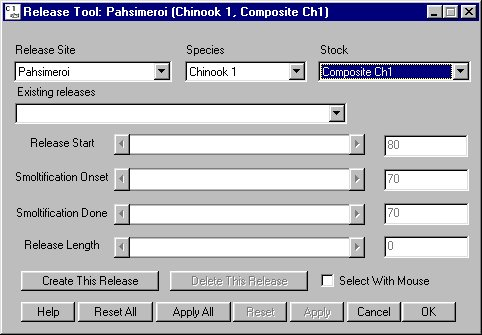

Create New Release
- Open the Release Tool window as directed in Open Release Tool,
- Select desired Release Site, Species, and Stock from the menus at the top of the window,
- Release Site: Identifies release site. Select release site (menu includes both existing and possible release sites) from list.
- Species: Identifies species of release: Chinook 0, Chinook 1, or Steelhead. Select species from list.
- Stock: Identifies stock of release. This can be set to "Generic" or a specific stock can be selected, e.g. Catherine Creek Ch1. Select stock from list.
- Click Create This Release, and
- Set release parameters as directed in Release Tool Features.

Release Tool window